Creatures
Everything that walks, flies, digs or trades in Wildhearth, photographed in game. Livestock come in breeds: see the breed database.
Wild animals
The animals of the woods, fields and rivers.

Stag
❤❤❤❤❤❤
0.9 × 1.5 blocks

Doe
❤❤❤❤❤❤
0.9 × 1.5 blocks

Fawn
❤❤❤❤❤❤
0.9 × 1.5 blocks
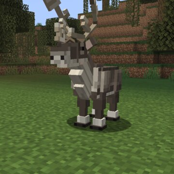
Reindeer bull
❤❤❤❤❤❤❤❤
1.0 × 1.4 blocks

Reindeer cow
❤❤❤❤❤❤❤❤
1.0 × 1.4 blocks
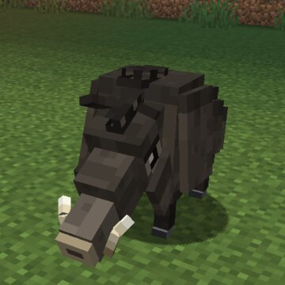


Crow
❤❤
0.5 × 0.6 blocks
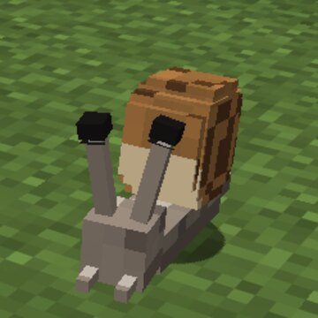
Snail
❤♡
0.4 × 0.5 blocks

Golden snail
❤♡
0.4 × 0.5 blocks

Cave snail
❤♡
0.4 × 0.5 blocks

Mossy snail
❤♡
0.4 × 0.5 blocks
Folk
The people you'll meet: some friendly, some less so.

Forest elf
❤❤❤❤❤❤❤❤❤❤
0.6 × 1.7 blocks
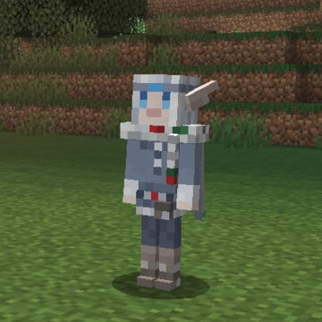
Forest elf
❤❤❤❤❤❤❤❤❤❤
0.6 × 1.7 blocks

Mrs Tansy Prickleback, the pedlar
❤❤❤❤❤❤❤❤❤❤
0.7 × 1.6 blocks
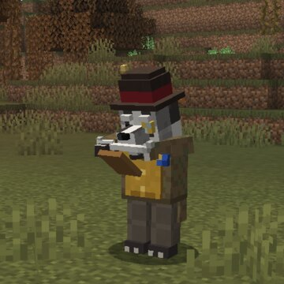
Judge Bramblewick
❤❤❤❤❤❤❤❤❤❤ ×20
0.8 × 2.1 blocks

Goblin
❤❤❤❤❤
0.5 × 0.9 blocks

Bridge troll
❤❤❤❤❤❤❤❤❤❤ ×100
1.6 × 2.6 blocks
Cattle
 Holstein
Holstein Jersey
Jersey Guernsey
Guernsey Angus
Angus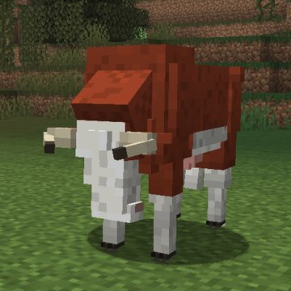
Hereford Brahman
Brahman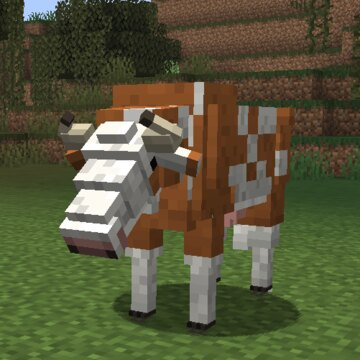
Simmental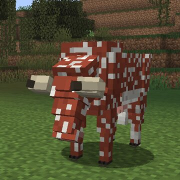
Shorthorn South Devon
South DevonPigs
 Yorkshire
Yorkshire Landrace
Landrace Duroc
Duroc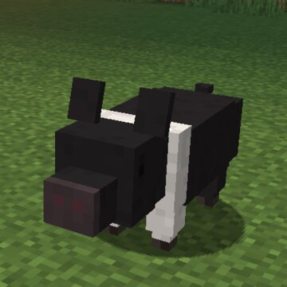
Hampshire Pietrain
Pietrain Berkshire
Berkshire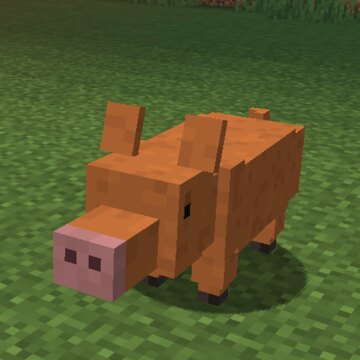
Tamworth Chester White
Chester White Poland China
Poland ChinaChickens
 Leghorn
Leghorn Isa Brown
Isa Brown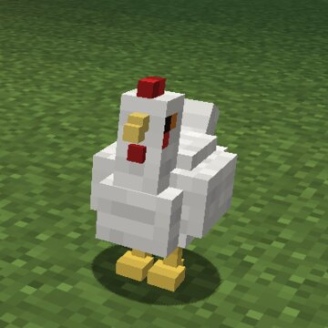
Cornish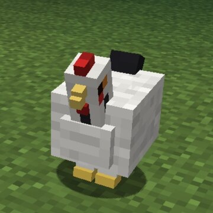
Brahma Jersey Giant
Jersey Giant Rhode Island Red
Rhode Island Red Sussex
Sussex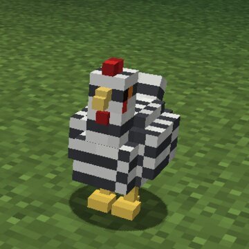
Barred Rock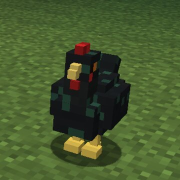
Australorp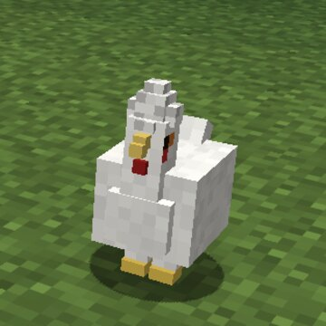
Silkie Polish
Polish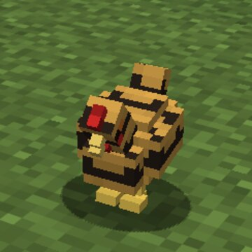
Sebright Cochin
Cochin Ameraucana
Ameraucana Marans
MaransSheep
 Suffolk
Suffolk Texel
Texel Hampshire Down
Hampshire Down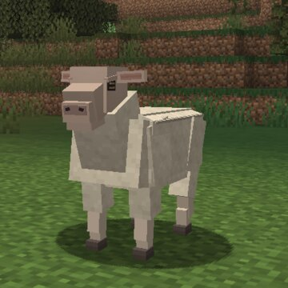
Charollais Île de France
Île de France Dorper
Dorper Santa Inês
Santa Inês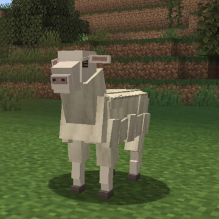
East Friesian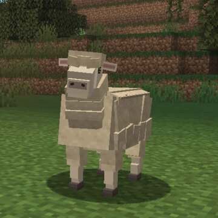
Merino Lincoln
Lincoln Romanov
Romanov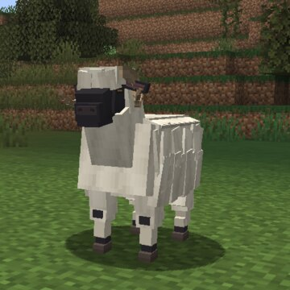
Valais Blacknose